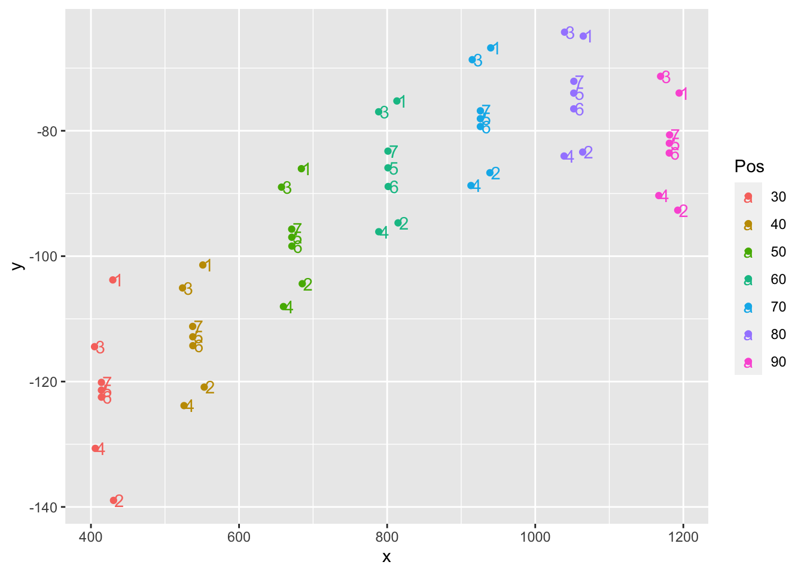
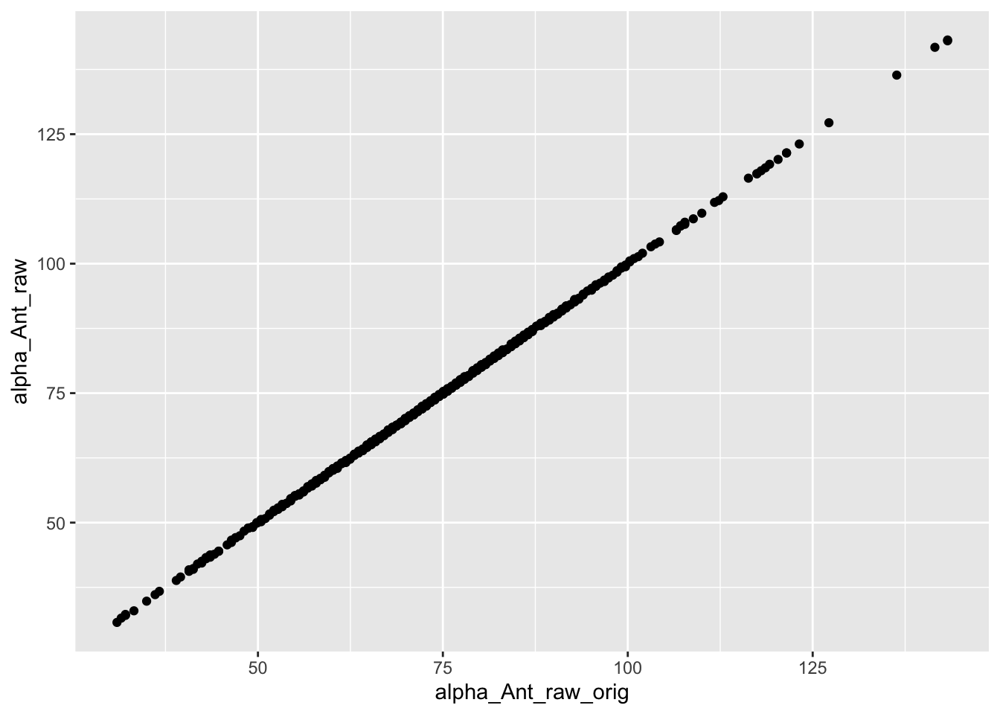
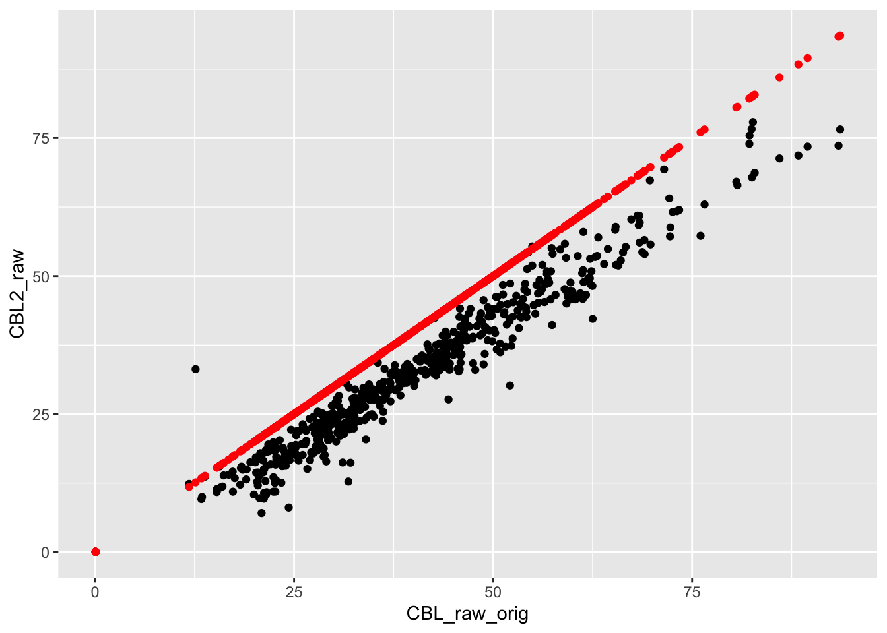
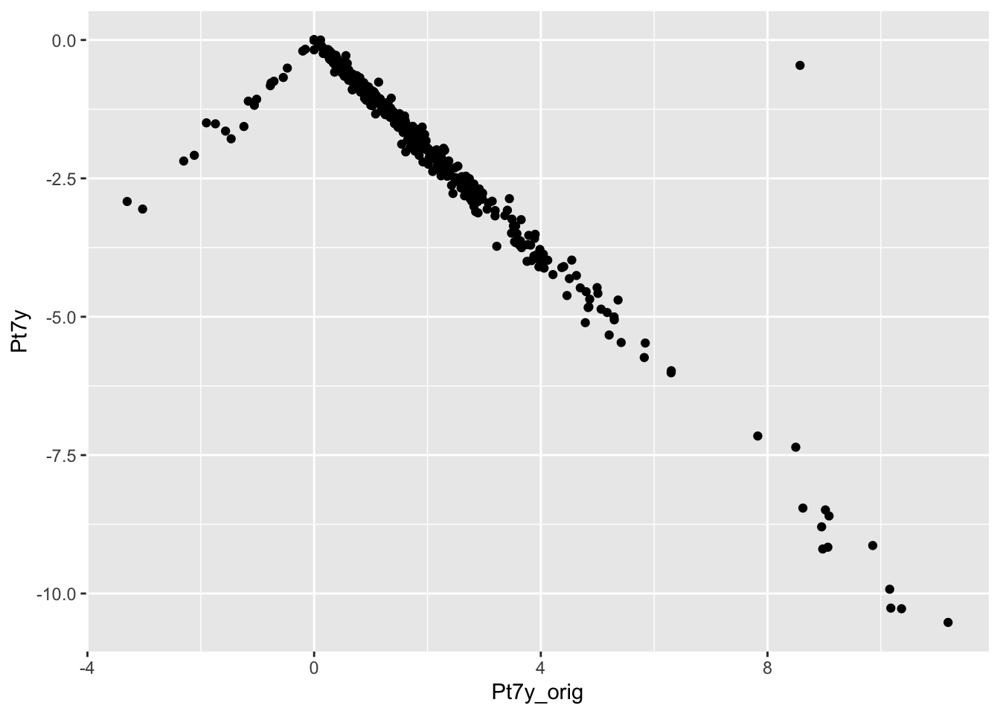

Last updated: 2022-04-11
Checks: 7 0
Knit directory: Code/
This reproducible R Markdown analysis was created with workflowr (version 1.7.0). The Checks tab describes the reproducibility checks that were applied when the results were created. The Past versions tab lists the development history.
Great! Since the R Markdown file has been committed to the Git repository, you know the exact version of the code that produced these results.
Great job! The global environment was empty. Objects defined in the global environment can affect the analysis in your R Markdown file in unknown ways. For reproduciblity it’s best to always run the code in an empty environment.
The command set.seed(20211230) was run prior to running the code in the R Markdown file. Setting a seed ensures that any results that rely on randomness, e.g. subsampling or permutations, are reproducible.
Great job! Recording the operating system, R version, and package versions is critical for reproducibility.
Nice! There were no cached chunks for this analysis, so you can be confident that you successfully produced the results during this run.
Great job! Using relative paths to the files within your workflowr project makes it easier to run your code on other machines.
Great! You are using Git for version control. Tracking code development and connecting the code version to the results is critical for reproducibility.
The results in this page were generated with repository version e47dde2. See the Past versions tab to see a history of the changes made to the R Markdown and HTML files.
Note that you need to be careful to ensure that all relevant files for the analysis have been committed to Git prior to generating the results (you can use wflow_publish or wflow_git_commit). workflowr only checks the R Markdown file, but you know if there are other scripts or data files that it depends on. Below is the status of the Git repository when the results were generated:
Ignored files:
Ignored: .DS_Store
Ignored: .Rhistory
Ignored: .Rproj.user/
Ignored: Flexibility Comparisons.nb.html
Ignored: Main.nb.html
Ignored: PGLS.FullData.nb.html
Ignored: PGLSforeachMeasFeature.nb.html
Ignored: PGLSwithPCA_Dims.nb.html
Ignored: PreppedVertMeas.nb.html
Ignored: ProcessCymatogasterFiles.nb.html
Ignored: ProcessFCSVfiles.nb.html
Ignored: TestingHabitatwithFriedmanData.nb.html
Ignored: Trilok_tree.nb.html
Ignored: VertLM.nb.html
Ignored: VertMeasLDA_Attempt.nb.html
Ignored: VertPGLS.nb.html
Ignored: VertPairs.nb.html
Ignored: analysis/.DS_Store
Ignored: analysis/10-VertLM.nb.html
Ignored: analysis/20-plot_phylogeny.nb.html
Ignored: analysis/21-plot_fits_and_summary.nb.html
Ignored: analysis/CheckSpeciesMatch.nb.html
Ignored: caper_test.nb.html
Ignored: data/.DS_Store
Ignored: ggtree_attempt.nb.html
Ignored: plot_example_data.nb.html
Ignored: plot_fits_and_summary.nb.html
Ignored: plot_phylogeny.nb.html
Ignored: renv/library/
Ignored: renv/staging/
Ignored: summarize_vert_meas.nb.html
Ignored: test_phylogeny.nb.html
Ignored: test_vertebraspace.nb.html
Ignored: vert_evol.Rproj
Untracked files:
Untracked: Main.html
Untracked: ProcessFCSVfiles.Rmd
Untracked: VertPGLS.html
Untracked: gg_saver.R
Untracked: output/BodyDistribution.pdf
Untracked: output/MasterVert_Measurements.csv
Untracked: output/mean_d_alphaPos_CBL.pdf
Untracked: output/pair_plot.pdf
Untracked: output/plot_example_data_figure.pdf
Untracked: output/stats_table.rtf
Untracked: plot_fits_and_summary.Rmd
Untracked: summarize_vert_meas.html
Untracked: testtree.csv
Untracked: vert_tree.csv
Note that any generated files, e.g. HTML, png, CSS, etc., are not included in this status report because it is ok for generated content to have uncommitted changes.
These are the previous versions of the repository in which changes were made to the R Markdown (analysis/01-ProcessCymatogasterFiles.Rmd) and HTML (docs/01-ProcessCymatogasterFiles.html) files. If you’ve configured a remote Git repository (see ?wflow_git_remote), click on the hyperlinks in the table below to view the files as they were in that past version.
| File | Version | Author | Date | Message |
|---|---|---|---|---|
| Rmd | edeae3c | Eric Tytell | 2021-12-30 | Rename notebooks to indicate order |
library(tidyverse)── Attaching packages ─────────────────────────────────────── tidyverse 1.3.1 ──✓ ggplot2 3.3.5 ✓ purrr 0.3.4
✓ tibble 3.1.4 ✓ dplyr 1.0.7
✓ tidyr 1.1.3 ✓ stringr 1.4.0
✓ readr 2.0.1 ✓ forcats 0.5.1── Conflicts ────────────────────────────────────────── tidyverse_conflicts() ──
x dplyr::filter() masks stats::filter()
x dplyr::lag() masks stats::lag()library(here)here() starts at /Users/etytel01/Documents/Vertebrae/CodeDana processed the Cymatogaster aggregata scans separately, so we need to add them to the MasterVert_Measuremenst file.
They’re in one file per vertebra:
datadir <- 'data/Cymatogaster'
vertfiles <- c('Cymatogaster_aggregata_30.fcsv',
'Cymatogaster_aggregata_40.fcsv',
'Cymatogaster_aggregata_50.fcsv',
'Cymatogaster_aggregata_60.fcsv',
'Cymatogaster_aggregata_70.fcsv',
'Cymatogaster_aggregata_80.fcsv',
'Cymatogaster_aggregata_90.fcsv')
bodyfile <- 'Cymatogaster_aggregata_bodyMarks.fcsv'filenames <- map_chr(vertfiles, ~here(file.path(datadir, .x)))Load in the coordinates
coords <-
map_dfr(filenames, ~read_csv(.x, skip=2)) %>%
select(x,z,label)Rows: 7 Columns: 14── Column specification ────────────────────────────────────────────────────────
Delimiter: ","
chr (3): # columns = id, label, associatedNodeID
dbl (10): x, y, z, ow, ox, oy, oz, vis, sel, lock
lgl (1): desc
ℹ Use `spec()` to retrieve the full column specification for this data.
ℹ Specify the column types or set `show_col_types = FALSE` to quiet this message.Rows: 7 Columns: 14── Column specification ────────────────────────────────────────────────────────
Delimiter: ","
chr (3): # columns = id, label, associatedNodeID
dbl (10): x, y, z, ow, ox, oy, oz, vis, sel, lock
lgl (1): desc
ℹ Use `spec()` to retrieve the full column specification for this data.
ℹ Specify the column types or set `show_col_types = FALSE` to quiet this message.Rows: 7 Columns: 14── Column specification ────────────────────────────────────────────────────────
Delimiter: ","
chr (3): # columns = id, label, associatedNodeID
dbl (10): x, y, z, ow, ox, oy, oz, vis, sel, lock
lgl (1): desc
ℹ Use `spec()` to retrieve the full column specification for this data.
ℹ Specify the column types or set `show_col_types = FALSE` to quiet this message.Rows: 7 Columns: 14── Column specification ────────────────────────────────────────────────────────
Delimiter: ","
chr (3): # columns = id, label, associatedNodeID
dbl (10): x, y, z, ow, ox, oy, oz, vis, sel, lock
lgl (1): desc
ℹ Use `spec()` to retrieve the full column specification for this data.
ℹ Specify the column types or set `show_col_types = FALSE` to quiet this message.Rows: 7 Columns: 14── Column specification ────────────────────────────────────────────────────────
Delimiter: ","
chr (3): # columns = id, label, associatedNodeID
dbl (10): x, y, z, ow, ox, oy, oz, vis, sel, lock
lgl (1): desc
ℹ Use `spec()` to retrieve the full column specification for this data.
ℹ Specify the column types or set `show_col_types = FALSE` to quiet this message.Rows: 7 Columns: 14── Column specification ────────────────────────────────────────────────────────
Delimiter: ","
chr (3): # columns = id, label, associatedNodeID
dbl (10): x, y, z, ow, ox, oy, oz, vis, sel, lock
lgl (1): desc
ℹ Use `spec()` to retrieve the full column specification for this data.
ℹ Specify the column types or set `show_col_types = FALSE` to quiet this message.Rows: 7 Columns: 14── Column specification ────────────────────────────────────────────────────────
Delimiter: ","
chr (3): # columns = id, label, associatedNodeID
dbl (10): x, y, z, ow, ox, oy, oz, vis, sel, lock
lgl (1): desc
ℹ Use `spec()` to retrieve the full column specification for this data.
ℹ Specify the column types or set `show_col_types = FALSE` to quiet this message.head(coords)# A tibble: 6 × 3
x z label
<dbl> <dbl> <chr>
1 -104. 430. Cymatogaster_aggregata_30-2
2 -139. 431. Cymatogaster_aggregata_30-3
3 -114. 405. Cymatogaster_aggregata_30-4
4 -131. 406. Cymatogaster_aggregata_30-5
5 -121. 414. Cymatogaster_aggregata_30-6
6 -122. 414. Cymatogaster_aggregata_30-7The x coordinate from the file is what we call y in the data set, and the z coordinate is x, so rename the columns. Plus extract the point number and position from the labels.
coordsxy <-
coords %>%
mutate(Pos = str_extract(label, "(?<=_)\\d+"),
PtNum = str_extract(label, "(?<=-)\\d+"),
PtNum = as.numeric(PtNum) - 1) %>%
rename(y = x, x = z)
coordsxy# A tibble: 49 × 5
y x label Pos PtNum
<dbl> <dbl> <chr> <chr> <dbl>
1 -104. 430. Cymatogaster_aggregata_30-2 30 1
2 -139. 431. Cymatogaster_aggregata_30-3 30 2
3 -114. 405. Cymatogaster_aggregata_30-4 30 3
4 -131. 406. Cymatogaster_aggregata_30-5 30 4
5 -121. 414. Cymatogaster_aggregata_30-6 30 5
6 -122. 414. Cymatogaster_aggregata_30-7 30 6
7 -120. 414. Cymatogaster_aggregata_30-8 30 7
8 -101. 551. Cymatogaster_aggregata_40-2 40 1
9 -121. 553. Cymatogaster_aggregata_40-3 40 2
10 -105. 524. Cymatogaster_aggregata_40-4 40 3
# … with 39 more rowsCheck the coordinates and make sure they make sense based on the previous data.
coordsxy %>%
group_by(Pos) %>%
ggplot(aes(x = x, y = y, color=Pos, label=PtNum)) +
geom_point() + geom_text(hjust=-0.1, vjust=0.5)
Make the wide data set like we have in the MasterVert_Measurements file.
coordswide <-
coordsxy %>%
pivot_wider(values_from = c(x, y), id_cols = Pos,
names_from = "PtNum", names_glue = "Pt{PtNum}{.value}")
coordswide# A tibble: 7 × 15
Pos Pt1x Pt2x Pt3x Pt4x Pt5x Pt6x Pt7x Pt1y Pt2y Pt3y Pt4y
<chr> <dbl> <dbl> <dbl> <dbl> <dbl> <dbl> <dbl> <dbl> <dbl> <dbl> <dbl>
1 30 430. 431. 405. 406. 414. 414. 414. -104. -139. -114. -131.
2 40 551. 553. 524. 526. 538. 538. 537. -101. -121. -105. -124.
3 50 684. 685. 657. 660. 671. 671. 671. -86.0 -104. -89.0 -108.
4 60 813. 815. 789. 789. 801. 801. 801. -75.2 -94.7 -77.0 -96.1
5 70 940. 939. 915. 913. 926. 926. 926. -66.8 -86.7 -68.7 -88.7
6 80 1065. 1064. 1040. 1039. 1052. 1052. 1052. -64.9 -83.4 -64.3 -84.0
7 90 1194. 1192. 1169. 1167. 1181. 1181. 1181. -74.0 -92.7 -71.3 -90.3
# … with 3 more variables: Pt5y <dbl>, Pt6y <dbl>, Pt7y <dbl>Functions for 2d and 3d distance.
dist2 <- function(x1,y1, x2,y2) {
sqrt((x2 - x1)^2 + (y2 - y1)^2)
}
dist3 <- function(x1,y1,z1, x2,y2,z2) {
sqrt((x2 - x1)^2 + (y2 - y1)^2 + (z2 - z1)^2)
}This calculates the different variables based on the points. (Pulled from Excel functions)
vertmeasurements <- function(df) {
df %>%
mutate(CBL_raw = dist2(Pt1x, Pt1y, Pt4x, Pt4y),
CBL2_raw = (abs(Pt1x - Pt3x) + abs(Pt2x - Pt4x))/2,
alpha_Pos_raw = acos((dist2(Pt5x,Pt5y, Pt2x,Pt2y)^2 + dist2(Pt5x,Pt5y, Pt1x,Pt1y)^2 -
dist2(Pt1x,Pt1y, Pt2x,Pt2y)^2) /
(2 * dist2(Pt5x,Pt5y, Pt2x,Pt2y) * dist2(Pt5x,Pt5y, Pt1x,Pt1y))) * 180/pi,
alpha_Ant_raw = acos((dist2(Pt5x,Pt5y, Pt4x,Pt4y)^2 + dist2(Pt5x,Pt5y, Pt3x,Pt3y)^2 -
dist2(Pt3x,Pt3y, Pt4x,Pt4y)^2) /
(2 * dist2(Pt5x,Pt5y, Pt4x,Pt4y) * dist2(Pt5x,Pt5y, Pt3x,Pt3y))) * 180/pi,
d_raw = dist2(Pt6x,Pt6y, Pt7x,Pt7y),
D_Pos_raw = dist2(Pt1x,Pt1y, Pt2x,Pt2y),
D_Ant_raw = dist2(Pt3x,Pt3y, Pt4x,Pt4y))
}
reversemeasurements <- function(df) {
df %>%
mutate(Pt1x = D_Pos_raw / 2 / tan(alpha_Pos_raw/2 * pi/180),
Pt2x = D_Pos_raw / 2 / tan(alpha_Pos_raw/2 * pi/180),
Pt3x = -D_Ant_raw / 2 / tan(alpha_Ant_raw/2 * pi/180),
Pt4x = -D_Ant_raw / 2 / tan(alpha_Ant_raw/2 * pi/180),
Pt5x = 0,
Pt6x = 0,
Pt7x = 0,
Pt1y = D_Pos_raw / 2,
Pt2y = -D_Pos_raw / 2,
Pt3y = D_Ant_raw / 2,
Pt4y = -D_Ant_raw / 2,
Pt5y = 0,
Pt6y = d_raw / 2,
Pt7y = -d_raw / 2)
}coordswide <-
coordswide %>%
vertmeasurements()
coordswide# A tibble: 7 × 22
Pos Pt1x Pt2x Pt3x Pt4x Pt5x Pt6x Pt7x Pt1y Pt2y Pt3y Pt4y
<chr> <dbl> <dbl> <dbl> <dbl> <dbl> <dbl> <dbl> <dbl> <dbl> <dbl> <dbl>
1 30 430. 431. 405. 406. 414. 414. 414. -104. -139. -114. -131.
2 40 551. 553. 524. 526. 538. 538. 537. -101. -121. -105. -124.
3 50 684. 685. 657. 660. 671. 671. 671. -86.0 -104. -89.0 -108.
4 60 813. 815. 789. 789. 801. 801. 801. -75.2 -94.7 -77.0 -96.1
5 70 940. 939. 915. 913. 926. 926. 926. -66.8 -86.7 -68.7 -88.7
6 80 1065. 1064. 1040. 1039. 1052. 1052. 1052. -64.9 -83.4 -64.3 -84.0
7 90 1194. 1192. 1169. 1167. 1181. 1181. 1181. -74.0 -92.7 -71.3 -90.3
# … with 10 more variables: Pt5y <dbl>, Pt6y <dbl>, Pt7y <dbl>, CBL_raw <dbl>,
# CBL2_raw <dbl>, alpha_Pos_raw <dbl>, alpha_Ant_raw <dbl>, d_raw <dbl>,
# D_Pos_raw <dbl>, D_Ant_raw <dbl>The body file contains marks for the standard length.
bodydata <- read_csv(here(file.path(datadir, bodyfile)), skip=2) %>%
select(x,y,z, label)Rows: 4 Columns: 14── Column specification ────────────────────────────────────────────────────────
Delimiter: ","
chr (3): # columns = id, label, associatedNodeID
dbl (10): x, y, z, ow, ox, oy, oz, vis, sel, lock
lgl (1): desc
ℹ Use `spec()` to retrieve the full column specification for this data.
ℹ Specify the column types or set `show_col_types = FALSE` to quiet this message.bodydata# A tibble: 4 × 4
x y z label
<dbl> <dbl> <dbl> <chr>
1 -140. -336. 48 Cymatogaster_aggregata_bodyMarks-snout
2 -122. -251. 421 Cymatogaster_aggregata_bodyMarks-neck
3 -85.1 -231. 819 Cymatogaster_aggregata_bodyMarks-anal
4 -105. -231. 1296 Cymatogaster_aggregata_bodyMarks-caudalThese I digitized directly in the CT scan in Slicer.
maxWidth.mm <- 175.3
maxWidthSlide <- 422
maxHeight.mm <- 492
maxHeightSlide <- 563Here we pull out the standard length
SL <-
bodydata %>%
mutate(Pt = str_extract(label, "(?<=Marks-)\\w+")) %>%
select(-label) %>%
pivot_wider(values_from = c(x, y, z),
names_from = "Pt", names_glue = "{Pt}{.value}") %>%
mutate(SL = dist3(snoutx,snouty,snoutz, caudalx,caudaly,caudalz)) %>%
pull(SL)And normalize all the variables.
coordswide <-
coordswide %>%
mutate(SL = SL,
Max_BW_mm = maxWidth.mm,
BW_slide = maxWidthSlide,
Max_BH_mm = maxHeight.mm,
BH_slide = maxHeightSlide,
d = d_raw / SL,
D_Ant = D_Ant_raw / SL,
D_Pos = D_Pos_raw / SL,
CBL = CBL_raw / SL,
alpha_Pos = alpha_Pos_raw,
alpha_Ant = alpha_Ant_raw,
d_BW = d_raw / Max_BW_mm,
D_Pos_BW = D_Pos_raw / Max_BW_mm,
D_Ant_BW = D_Ant_raw / Max_BW_mm,
`SL/Max_BW` = SL / Max_BW_mm,
Species = "Cymatogaster_aggregata",
Indiv = 1,
Habitat = "pelagic",
Pos = as.numeric(Pos))vertmeasdata <- read_csv(here('data/MasterVert_Measurements_old.csv'))Rows: 578 Columns: 54── Column specification ────────────────────────────────────────────────────────
Delimiter: ","
chr (16): Species, MatchSpecies, Family, Body Shape, Habitat_Initial, Habita...
dbl (38): Indiv, Pos, SL, CBL_raw, alpha_Pos_raw, d_raw, D_Pos_raw, alpha_An...
ℹ Use `spec()` to retrieve the full column specification for this data.
ℹ Specify the column types or set `show_col_types = FALSE` to quiet this message.head(vertmeasdata)# A tibble: 6 × 54
Species MatchSpecies Family Indiv Pos SL CBL_raw alpha_Pos_raw d_raw
<chr> <chr> <chr> <dbl> <dbl> <dbl> <dbl> <dbl> <dbl>
1 Alectis_cil… <NA> <NA> 1 40 799 24.9 1.51 3.57
2 Alectis_cil… <NA> <NA> 1 50 799 34.4 1.18 3.13
3 Alectis_cil… <NA> <NA> 1 60 799 35.8 1.38 2
4 Alectis_cil… <NA> <NA> 1 70 799 36.6 1.34 0.75
5 Alectis_cil… <NA> <NA> 1 80 799 35.2 1.32 0.54
6 Alectis_cil… <NA> <NA> 1 90 799 32.8 1.31 0.49
# … with 45 more variables: D_Pos_raw <dbl>, alpha_Ant_raw <dbl>,
# D_Ant_raw <dbl>, CBL <dbl>, alpha_Pos <dbl>, d <dbl>, D_Pos <dbl>,
# alpha_Ant <dbl>, D_Ant <dbl>, Pt1x <dbl>, Pt1y <dbl>, Pt2x <dbl>,
# Pt2y <dbl>, Pt3x <dbl>, Pt3y <dbl>, Pt4x <dbl>, Pt4y <dbl>, Pt5x <dbl>,
# Pt5y <dbl>, Pt6x <dbl>, Pt6y <dbl>, Pt7x <dbl>, Pt7y <dbl>,
# Body Shape <chr>, Habitat_Initial <chr>, Habitat_Friedman <chr>,
# Habitat_FishBase <chr>, Habitat <chr>, Water_Type <chr>, Max_BW_mm <dbl>, …Check that the calculations we’ve done here match the data in the data table.
checkcalc <-
vertmeasdata %>%
rename_with(~ str_c(.x, "_orig"), ends_with("raw")) %>%
vertmeasurements() %>%
mutate(alpha_Ant_raw_orig = alpha_Ant_raw_orig * 180/pi,
alpha_Pos_raw_orig = alpha_Pos_raw_orig * 180/pi) %>%
rename_with(~ str_c(.x, "_orig"), starts_with("Pt")) %>%
group_by(Species, Indiv) %>%
mutate(across(starts_with("Pt") & ends_with("x_orig"), ~ .x - Pt5x_orig),
across(starts_with("Pt") & ends_with("y_orig"), ~ .x - Pt5y_orig)) %>%
reversemeasurements()checkcalc %>%
ggplot(aes(x = alpha_Ant_raw_orig, y = alpha_Ant_raw)) +
geom_point()
checkcalc %>%
ggplot(aes(x = CBL_raw_orig, y = CBL2_raw)) +
geom_point() +
geom_point(aes(y = CBL_raw), color="red") They match!
checkcalc %>%
ggplot(aes(x = Pt7y_orig, y = Pt7y)) +
geom_point()
Now merge the Cymatogaster data in, and save the data file.
vertmeasdata <-
bind_rows(vertmeasdata, coordswide)write_csv(vertmeasdata, here('output/MasterVert_Measurements.csv'))
sessionInfo()R version 4.1.2 (2021-11-01)
Platform: x86_64-apple-darwin17.0 (64-bit)
Running under: macOS Big Sur 10.16
Matrix products: default
BLAS: /Library/Frameworks/R.framework/Versions/4.1/Resources/lib/libRblas.0.dylib
LAPACK: /Library/Frameworks/R.framework/Versions/4.1/Resources/lib/libRlapack.dylib
locale:
[1] en_US.UTF-8/en_US.UTF-8/en_US.UTF-8/C/en_US.UTF-8/en_US.UTF-8
attached base packages:
[1] stats graphics grDevices datasets utils methods base
other attached packages:
[1] here_1.0.1 forcats_0.5.1 stringr_1.4.0 dplyr_1.0.7
[5] purrr_0.3.4 readr_2.0.1 tidyr_1.1.3 tibble_3.1.4
[9] ggplot2_3.3.5 tidyverse_1.3.1
loaded via a namespace (and not attached):
[1] Rcpp_1.0.7 lubridate_1.7.10 assertthat_0.2.1 rprojroot_2.0.2
[5] digest_0.6.27 utf8_1.2.2 R6_2.5.1 cellranger_1.1.0
[9] backports_1.2.1 reprex_2.0.1 evaluate_0.14 highr_0.9
[13] httr_1.4.2 pillar_1.6.2 rlang_0.4.11 readxl_1.3.1
[17] rstudioapi_0.13 whisker_0.4 rmarkdown_2.10 labeling_0.4.2
[21] bit_4.0.4 munsell_0.5.0 broom_0.7.9 compiler_4.1.2
[25] httpuv_1.6.4 modelr_0.1.8 xfun_0.25 pkgconfig_2.0.3
[29] htmltools_0.5.2 tidyselect_1.1.1 workflowr_1.7.0 fansi_0.5.0
[33] crayon_1.4.1 tzdb_0.1.2 dbplyr_2.1.1 withr_2.4.2
[37] later_1.3.0 grid_4.1.2 jsonlite_1.7.2 gtable_0.3.0
[41] lifecycle_1.0.0 DBI_1.1.1 git2r_0.29.0 magrittr_2.0.1
[45] scales_1.1.1 vroom_1.5.4 cli_3.0.1 stringi_1.7.4
[49] farver_2.1.0 renv_0.14.0 fs_1.5.0 promises_1.2.0.1
[53] xml2_1.3.2 ellipsis_0.3.2 generics_0.1.0 vctrs_0.3.8
[57] tools_4.1.2 bit64_4.0.5 glue_1.4.2 hms_1.1.0
[61] parallel_4.1.2 fastmap_1.1.0 yaml_2.2.1 colorspace_2.0-2
[65] rvest_1.0.1 knitr_1.34 haven_2.4.3